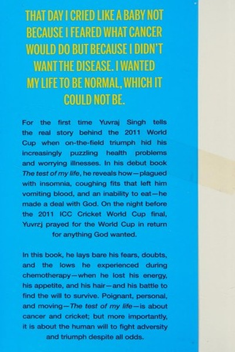

Library › Self-Improvement
The Test of My Life — Summary & Key Lessons

From World Cup glory to a cancer ward — Yuvraj's fight, comeback and lessons in resilience.
📖 OPEN THE FULL INTERACTIVE BREAKDOWN →🌐 Read it in Hindi, Hinglish, Gujarati, Tamil & 22 more languages — free, with audio.
💡 The Big Idea
Days after winning cricket's World Cup, Yuvraj Singh discovered he had cancer. This is the story of that collision: the shock, the treatment, the doubts, and the slow climb back to the field. His core message — resilience is not a personality trait but a practice built on honest fear, family support, tiny routines and refusing to let identity be defined by a single role.
🧠 The 6 Key Lessons
Lesson 1: Listen to Your Body Before It Shouts
Chapter 1: The Diagnosis
Yuvraj's symptoms — coughing, fatigue, a lump — appeared months before the diagnosis, but the relentless schedule of cricket made him ignore them. High performers routinely silence their body's warnings in the name of commitment. The body's quiet signals are the cheapest information you will ever get; ignoring them is how small problems become life-threatening.
📖 Example: Through the 2011 World Cup, Yuvraj played with a growing tumor in his lung, dismissing the cough as weather and exhaustion. By the time he finally checked, it was cancerous — the tournament's Man of the Series had been performing on a body that was failing. Read the full example →
⚡ Do this: Book one full health checkup this month, and list the three signals you've been ignoring at work or in your body. Address the first one this week.
Lesson 2: Fear Is Not Weakness — Denial Is
Chapter 2: The News
Yuvraj describes the terror of the diagnosis in raw detail — crying, bargaining, disbelief. His lesson: feeling fear is human; pretending you don't feel it is what breaks you. Naming the fear, sharing it with family, and letting yourself be afraid in private is the first step of real courage.
📖 Example: He initially kept the diagnosis from his mother, fearing her reaction, and the secrecy drained him. When he finally shared everything with his family, the collective strength replaced his lonely panic — the fear didn't vanish, but it stopped being a solo… Read the full example →
⚡ Do this: Name your biggest fear in writing, then tell one trusted person. Secrecy inflates fear; sharing deflates it.
Lesson 3: Identity Is Bigger Than Your Job Title
Chapter 3: The Hospital
In the cancer ward, Yuvraj realized he was not 'just a cricketer' — the strip of identity he had built his life on. Watching fellow patients fight with dignity, he learned that your role is what you do, not who you are. People who fuse identity with profession break when the profession pauses.
📖 Example: Surrounded by patients — children, grandparents, ordinary workers — who never played a single international match, Yuvraj saw courage without fame. Their quiet battles redefined his idea of strength and separated his self-worth from his batting average. Read the full example →
⚡ Do this: Write three sentences about who you are that do not mention your job. Practice being that person weekly.
Lesson 4: Small Wins Rebuild Big Confidence
Chapter 4: The Recovery
Returning from chemotherapy, Yuvraj could barely walk to the bathroom — so he set micro-goals: one extra step today, one push-up tomorrow. The compounding of tiny physical wins rebuilt his belief before his body fully recovered. After a collapse, don't aim at the summit; aim at the next step and let small wins compound.
📖 Example: His first workout was embarrassingly small — yet each week the numbers grew, until he was sprinting and lifting again. By the time he returned to international cricket, his mental confidence had been rebuilt by dozens of micro-victories in the gym. Read the full example →
⚡ Do this: Pick one collapsed area of your life and set a goal so small it is laughable — then grow it 1% daily for 30 days.
Lesson 5: Support Networks Are Survival Infrastructure
Chapter 5: The People
Yuvraj credits his recovery to a circle — family, teammates, doctors, even strangers' messages — that carried him on days he couldn't walk. He learned to ask for help without shame. In a culture that prizes self-reliance, asking for support is not weakness; refusing it is self-sabotage.
📖 Example: Messages from fans, visits from teammates, and his mother's relentless care formed a safety net that no amount of money could buy. Yuvraj openly says the loneliness of illness would have killed him faster than the cancer without that circle. Read the full example →
⚡ Do this: Write down your support circle and honestly mark who you'd call in a crisis. Strengthen two relationships this month — before you need them.
Lesson 6: The Comeback Is a Marathon, Not a Movie
Chapter 6: The Return
Expecting a fairy-tale return, Yuvraj found the reality was ugly: dropped from teams, doubted by selectors, struggling with form. His lesson — comebacks are built in unglamorous months of training, patience and accepting a slower timeline. The world claps at the return; the person lives through the boring middle.
📖 Example: Years after recovery, Yuvraj was still fighting for his place, delivering flashes of the old magic amid long stretches of struggle. His eventual retirement was peaceful because he had already won the only match that mattered — the one against the disease. Read the full example →
⚡ Do this: Start one comeback project with a 12-month horizon, and define success as consistency for the first six months, not results.
✅ 5-Step Action Plan
- Book a full health checkup and address your top ignored signal
- Name your biggest fear in writing and share it with one trusted person
- Write three identity sentences that don't mention your job
- Set one laughably small goal and grow it 1% daily for 30 days
- Strengthen two support-circle relationships this month
⚠️ When This Doesn't Work
⚠️ When this doesn't work: Yuvraj's story can unintentionally pressure people to be 'inspiring' through illness — nobody owes the world a heroic comeback, and his access to elite medical care is not universal. If you or someone you love is sick, the only required 'lesson' is to rest, treat and be kind to yourself.
💀 The Graveyard Proves It
🍏 Steve Jobs — Nine Months of Fruit Juice vs. Cancer. Burn: Possibly his life. Read the full case study →
💬 Best Quotes from The Test of My Life
- “I had won the World Cup, and now I was fighting for my life. Sport had not prepared me for this.”
- “Cancer teaches you what you are made of — and what you are not.”
- “The comeback is always harder than the debut.”
Interactive version: mark lessons as read, listen in your language, share quote cards.